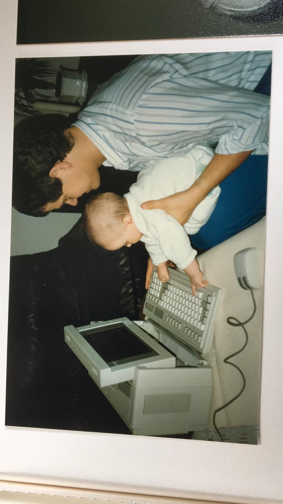

30 April 2019
Hello world! My name is Jonas Vanbuel and my coding pseudonym is ‘cait0’. I just turned 31 years old and grew up and studied in Belgium. After my studies in Fine Arts I initially moved to New York to start working in the ‘art world’ (think of auction houses, galleries and art collections), before eventually moving to London in 2012. My girlfriend and I currently live in Harringay and during the weekend I love going for a long walk, run or yoga class during the day, before a good pint and nice meal in the evening.
Ever since my childhood I have been creative, inquisitive and passionate. I remember when I was 10 years old working weeks on end to develop primitive Adobe Flash animations to use as party invites, and (I know - cliche) as a teenager I was busy designing album covers and other merchandise for my band in Photoshop. During my studies in Fine Arts, I truly cherished developing ideas in function of art projects, experimenting with new materials and techniques, researching new artists and artworks in relation to my ideas, and obsessing over the smallest details whilst creating objects of art, design and photography. However abstract and (in retrospect) impractical these early artistic experiences might have been, the continuous research and development in an intense state of flow were deeply enjoyable and hugely inspiring in and of itself.
In an attempt to stay connected to artists and their studios as much as possible, I started working professionally in the art world straight after my studies. It was exhilarating at first to be handling some of the most expensive works of art, and being surrounded by some of the most successful (read: wealthy) people in the world when moving to New York and London.
Since 2017 I have been working full-time as Art and Exhibitions Coordinator for Mario Testino, a well-known fashion photographer and chronicler of the extravagant lifestyle of the rich and famous. I have been responsible for managing his art collection, for organising international exhibitions of his own photography, and for managing the production of his prints for private sales. Though I still love creating things (e.g. developing small design objects or building simple home furniture), my professional career has predictably pushed my creative passion much to the background.
Although my current job certainly seems like a logic outcome and a good fit in light of my past interests and experiences, over the years I’ve become extremely disillusioned with the commercial art world and most of its participants. I no longer feel at home or even remotely comfortable serving the extraordinarily privileged (frankly spoiled) on a daily basis. It has become a negative environment for me, and art has lost most of its magic within an evermore aggressive world of social media and influence.
Around Christmas last year I stumbled across an interview on Medium with two former students of Founders and Coders’ training program. The article immediately sparked my interest and imagination, led me to start researching your peer-led coding bootcamp in more detail, and convinced me to start working on the prerequisites the very next day!
Below you can find an image carousel I built with some photographs from a recent trip to Tenerife.
I built this image carousel using an image sprite, which allowed for smooth sliding transitions between the photographs when going left and right in the carousel. First I created individual keyframes in the CSS style sheet containing the ‘from’ and ‘to’ coordinates of each photograph within the sprite. I then used an index variable in JavaScript to track the sequence of the images and to call the relevant animation keyframes through a switch statement when going forwards and backwards through the carousel. As you can see in the script, the code itself is not very complex, though it’s likely not the most maintenance-friendly method of building a slideshow since it’s quite tedious to add or remove photographs from both the sprite and the code.
In order to keep the image files separate and therefore easier to work with, I also experimented with stacking several divs on top of each other within a container, each having a unique background image. Instead of moving to different image coordinates within the sprite, I used JavaScript to set the display properties to show or hide the images. The slideshow was working fine, though unfortunately I wasn’t able to implement smooth sliding transitions between the images. The transition to the left or right worked, but moving the image to the background of the stack without interrupting the other images was problematic. (I suspect the lines of code to display and hide the respective images and update their z-index was running much faster than the 0.5s transitions to the left or right.)

To gain control of the precise look and style of my play, pause and arrow buttons I learned how to design and manipulate SVG objects for the web. I designed the different states (or layers) of the buttons in Adobe Illustrator first, before either copying the SVG code directly to the DOM, or linking the SVG objects to the external files. I then used JavaScript extensively to style the SVG objects by using different classes assigned to different layers, such as background (fill), outline and shadow.
(I also added a little styling surprise! Please try to refresh the page and as you will see the background color gets randomly determined within a certain RGB range thanks to Javascript!)
When I started working on Founders and Coders’ prerequisites only a few months ago, I couldn’t have imagined being able to complete the more advanced katas on Codewars, or creating the image carousel and this webpage the way I did. I genuinely look forward to the steep learning curve ahead and to the collaborative and entrepreneurial nature of your program. I can’t wait to find out what can be accomplished over the course of your 4 month summer cohort!
On a personal level, I have decided to leave my current job and industry and I am convinced that Founders and Coders can be an excellent catalyst for this change, leading to new types of experiences, skills and insights which can lead to new types of opportunities in the future. I am eager to find new ways of being creative, by developing new types of things, code instead of art or design.